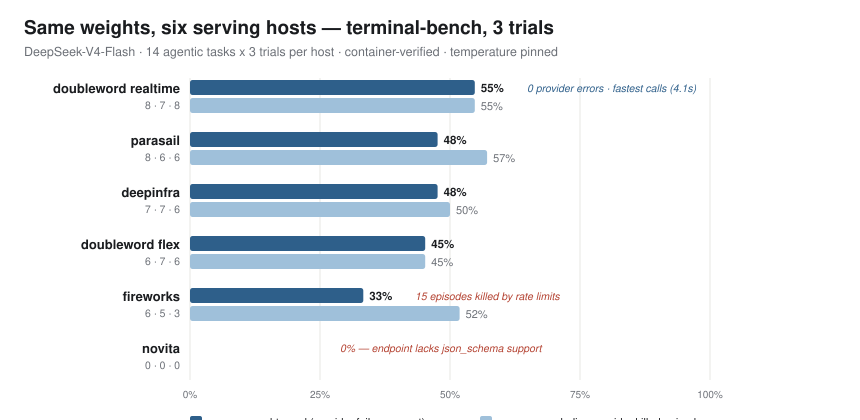
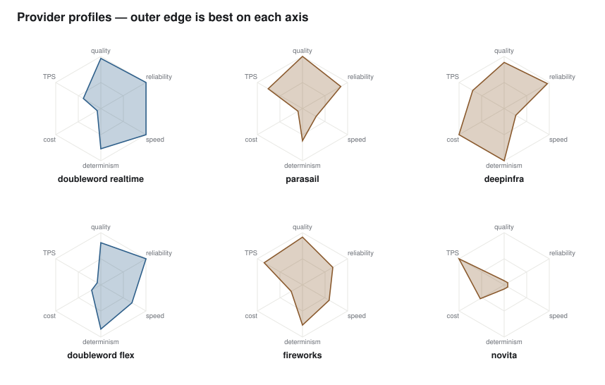

Same weights, six hosts: 0% to 55% task success.
We ran identical open-model weights on six serving hosts through the same 14 agentic terminal-bench tasks, three trials each, pass or fail decided by each task's own test suite inside a container. Model quality was a statistical tie on every functioning host. End-to-end task success still ranged from 0% to 55%, and the whole gap came from the serving layer: one host rejects an API feature the agent needs on every turn, one lost a third of its episodes to shared-pool rate limits, and identical calls showed a 5x latency spread. None of this is visible on a pricing page.
Setup
One model, deepseek/deepseek-v4-flash-0731, served by six hosts: Doubleword
(realtime and flex tiers) and four OpenRouter upstreams pinned with fallbacks disabled
(DeepInfra fp4, Parasail fp8, Fireworks, Novita fp8). The served host is verified on every call,
so a pinned run is checked, not trusted.
The workload is terminal-bench: agentic terminal tasks where the model drives a shell inside a container and the task's own test suite decides pass or fail. No LLM judge, no user simulator, temperature pinned by the agent. 14 tasks, 3 identical trials per host, 252 scored episodes. After the runs, every failed episode's raw API traffic was audited to separate model failures from provider failures.
Results

| Host | Pass | Rate | Wilson 95% CI | Status | What the audit found |
|---|---|---|---|---|---|
| doubleword realtime | 23/42 | 54.8% | 40–69% | healthy | clean episodes, fastest median latency of the six |
| deepinfra (fp4) | 20/42 | 47.6% | 33–62% | healthy | clean episodes |
| parasail (fp8) | 20/42 | 47.6% | 33–62% | healthy | clean episodes |
| doubleword flex | 19/42 | 45.2% | 31–60% | healthy | async queue tier; same weights, slower first token |
| fireworks | 14/42 | 33.3% | 21–48% | rate-limited | 15 of 42 episodes killed by shared-pool 429s; its error-free trial scored in the pack |
| novita (fp8) | 0/42 | 0.0% | 0–8% | capability gap | rejects the json_schema response format the agent needs, on every turn, with a healthy model behind it |
The four findings
1. Model quality is a tie. The serving layer is not.
Excluding provider-killed episodes, every functioning host lands at 45 to 57%, indistinguishable at this sample size (pairwise Fisher exact p = 0.51 to 1.0 across the healthy band). End to end, the spread is 0 to 55%, and the gap is entirely provider reliability. The ranking a leaderboard would print for these six rows would be a ranking of infrastructure weather, not of the model.
2. A host can score zero with a perfectly healthy model.
Novita's 0 of 42 is not a bad sample: its endpoint rejects the json_schema
response format the agent requires, on every single turn. That is a deterministic capability
failure (p < 0.0001 against every other host, and the mechanism is visible in the raw
traffic). It is invisible on single-turn benchmarks and fatal for agents. API capability
coverage is a provider axis nobody prices.
3. Rate limits masquerade as model degradation.
Fireworks lost 15 of 42 episodes to shared-pool rate limits. Averaged naively, that reads as a 33% model. Audited, it is weather: the one trial that drew no 429s scored right in the healthy pack. Against the top host the gap is p = 0.078, and we make no quality claim from it; the claim is the counted, audited kill mechanism.
4. Identical calls, different physics.
Median latency for the same calls spread 5x across hosts (4.1s vs 21.2s), and determinism differed: one host flipped 2 of 14 task outcomes between identical trials, another 7 of 14. If your agent's behavior depends on who serves the weights, "the same model" is not the same product.

What this says about picking a provider
The three questions that decided these six rows never appear on a pricing page: does the host support every API feature your agent uses, does it shed your traffic under load, and how fast and how deterministically does it serve identical calls. All three are measurable on your own workload before you commit, which is the point of Compound: fix the model, sweep the hosts, and read one table of cost, latency, and quality per route, from the same cache that makes re-deciding free.
Statistical notes
- Intervals are Wilson 95% binomial CIs on 42 episodes per host (14 tasks × 3 trials).
- Novita vs every other host: Fisher exact p < 0.0001. The failure is also mechanistic and deterministic, confirmed in the raw request logs, so it does not depend on the sample.
- Fireworks vs the top host: p = 0.078. We report the audited rate-limit kill count (15 of 42) rather than a quality inference.
- All pairwise comparisons inside the healthy band (45 to 57%): p = 0.51 to 1.0. We claim a tie, and the tie is the finding.
- Episode-level pass/fail comes from each task's own test suite; there is no judge anywhere in the loop.
Reproduce it
Any model, your pick of hosts, dry run by default:
# discover pinnable hosts for a model $ compound-bench providers deepseek/deepseek-v4-flash-0731 # run the sweep (drop --go for a free dry run) $ compound-bench run terminal_bench \ --model deepseek/deepseek-v4-flash-0731 \ --providers openrouter/deepinfra,doubleword/realtime,doubleword/flex \ --tasks fix-permissions,create-bucket --trials 3 --go
Since this run, Compound's pinning proxy auto-retries 408/429/5xx with backoff and pins with
require_parameters, so both provider-failure classes above are absorbed or fail
fast at episode one.